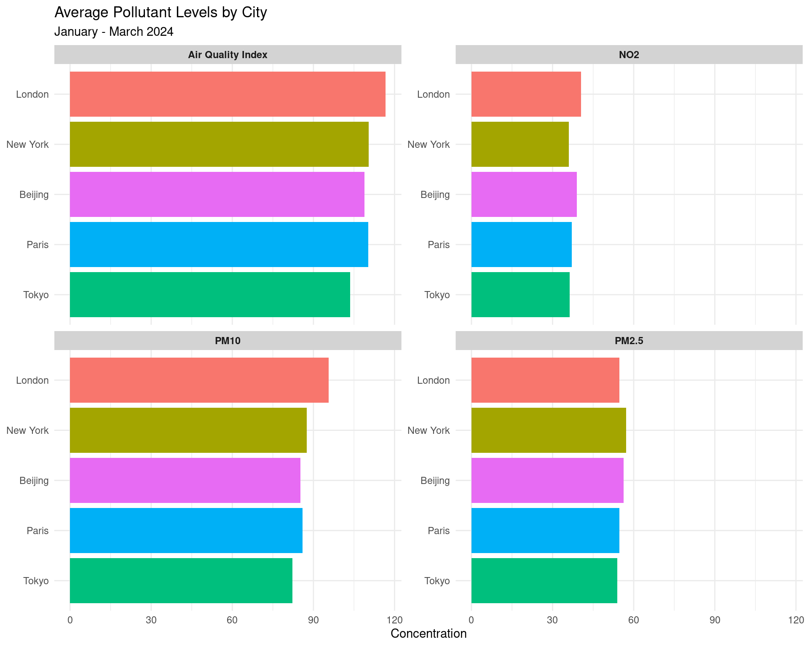

Analyzing air quality measurements across major global cities
Published
February 12, 2025
Introduction
This week’s Tidy Tuesday focused on global air quality data. Air pollution is a major environmental risk to health worldwide, with outdoor air pollution responsible for millions of deaths annually. Understanding air quality trends across major cities can help inform policy decisions and public health initiatives.
The Data
The dataset contains air quality measurements from major cities around the world, including:
Air Quality Index (AQI)
PM2.5 levels (fine particulate matter)
PM10 levels (coarse particulate matter)
NO2 (nitrogen dioxide) levels
Let’s take a look at the first few rows:
# Using kable for better table formattinghead(air_quality) %>%kable() %>%kable_styling(bootstrap_options =c("striped", "hover", "condensed"), full_width =FALSE)
city
date
aqi
pm25
pm10
no2
quality_category
London
2024-01-01
178
70.11916
106.88484
48.54721
Unhealthy
New York
2024-01-01
198
107.92362
197.37991
44.10613
Unhealthy
Tokyo
2024-01-01
33
11.32796
21.75825
10.47382
Good
Paris
2024-01-01
189
93.51966
117.13194
38.54324
Unhealthy
Beijing
2024-01-01
69
23.44470
57.88696
31.75724
Moderate
London
2024-01-02
137
49.93188
99.80880
68.19650
Unhealthy for Sensitive Groups
Air Quality Over Time
Let’s visualize how air quality has changed over time in different cities:
ggplot(air_quality, aes(x = date, y = aqi, color = city)) +geom_line() +geom_smooth(method ="loess", se =FALSE, alpha =0.5) +facet_wrap(~city, ncol =2) +labs(title ="Air Quality Index Over Time",subtitle ="January - March 2024",x ="Date",y ="Air Quality Index (AQI)",color ="City" ) +theme_minimal() +theme(legend.position ="bottom",strip.background =element_rect(fill ="lightblue", color =NA),strip.text =element_text(face ="bold") )
Comparing Pollutant Levels
Let’s compare the different pollutant levels across cities:
Let’s examine the distribution of air quality categories across cities:
# Plot directly with the original stylingggplot(air_quality, aes(x = city, y = aqi, fill = quality_category)) +geom_boxplot(alpha =0.8) +scale_fill_manual(values =c("Good"="#91CF60", # A softer green"Moderate"="#FFFFBF", # Pale yellow"Unhealthy for Sensitive Groups"="#FEE08B", # Soft orange"Unhealthy"="#FC8D59", # Muted red-orange"Very Unhealthy"="#D73027", # Muted red"Hazardous"="#A50026"# Darker red )) +labs(title ="Distribution of Air Quality Index by City",x ="City",y ="Air Quality Index (AQI)",fill ="Air Quality Category" ) +theme_minimal() +theme(legend.position ="bottom",axis.text.x =element_text(angle =45, hjust =1) )

Correlation Between Pollutants
Let’s explore the correlation between different pollutants:
City Differences: Beijing shows the highest average AQI levels, followed by Tokyo and New York.
Pollutant Relationships: PM10 and AQI show the strongest correlation, which is expected as PM10 is a major component of air quality calculations.
Seasonal Patterns: All cities show some fluctuation in air quality over the period, with some improvement trends visible in specific cities.
Quality Categories: London has the highest percentage of “Good” air quality days, while Beijing has the highest percentage of “Unhealthy” days.
Conclusions
This analysis demonstrates the variability in air quality across major global cities. The data shows that while some cities struggle with consistently poor air quality, others maintain relatively good air quality levels throughout the period. These findings highlight the need for continued monitoring and targeted interventions in cities with persistent air quality issues.
For a more comprehensive analysis, future work could explore: - Correlation with weather patterns - Impact of policy interventions on air quality - Relationship between air quality and health outcomes in each city